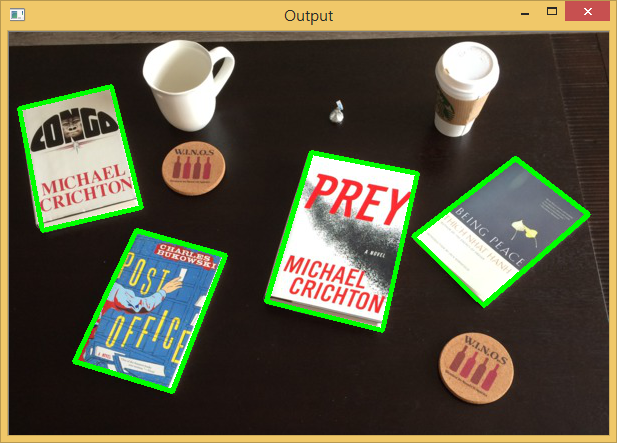
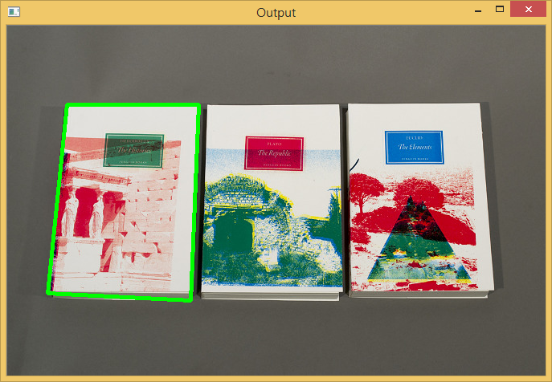

xwMOOC 고생대 프로젝트
이미지에 나온 책이 몇개
A guide to finding books in images using Python and OpenCV 블로그에 게시된 기사가 평소 관심을 갖고 있던거라 버그가 있어 버그를 수정한 코드로 파이썬2에서 정상 동작하게 만들고 이미지에 들어있는 책이 몇권인지 확인해 봤다.
1. 실행결과

I found 4 books in that image
I found 1 books in that image2. 파이썬 openCV 코드
# import the necessary packages
import numpy as np
import cv2
# load the image, convert it to grayscale, and blur it
##image = cv2.imread("example.jpg")
##image = cv2.imread("test01.jpg")
##image = cv2.imread("one-book.jpg")
##image = cv2.imread("one-book-plus.jpg")
##image = cv2.imread("four-books.jpg")
image = cv2.imread("three-books.jpg")
gray = cv2.cvtColor(image, cv2.COLOR_BGR2GRAY)
gray = cv2.GaussianBlur(gray, (3, 3), 0)
cv2.imshow("Gray", gray)
cv2.waitKey(0)
# detect edges in the image
edged = cv2.Canny(gray, 10, 250)
cv2.imshow("Edged", edged)
cv2.waitKey(0)
# construct and apply a closing kernel to 'close' gaps between 'white'
# pixels
kernel = cv2.getStructuringElement(cv2.MORPH_RECT, (7, 7))
closed = cv2.morphologyEx(edged, cv2.MORPH_CLOSE, kernel)
cv2.imshow("Closed", closed)
cv2.waitKey(0)
# find contours (i.e. the 'outlines') in the image and initialize the
# total number of books found
(_, cnts, _) = cv2.findContours(closed.copy(), cv2.RETR_EXTERNAL, cv2.CHAIN_APPROX_SIMPLE)
total = 0
# loop over the contours
for c in cnts:
# approximate the contour
peri = cv2.arcLength(c, True)
approx = cv2.approxPolyDP(c, 0.02 * peri, True)
# if the approximated contour has four points, then assume that the
# contour is a book -- a book is a rectangle and thus has four vertices
if len(approx) == 4:
cv2.drawContours(image, [approx], -1, (0, 255, 0), 4)
total += 1
# display the output
print "I found {0} books in that image".format(total)
cv2.imshow("Output", image)
cv2.waitKey(0)